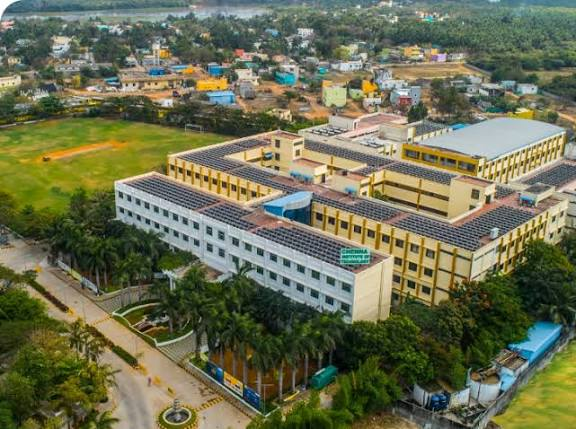

Chennai Institute of Technology (CIT) is a renowned engineering college located in Chennai, India. Established in 2010, CIT has quickly gained a reputation for its commitment to academic excellence and innovation in the field of engineering education.
The college offers a wide range of undergraduate and postgraduate programs in various engineering disciplines, including Computer Science, Electronics, Mechanical, Civil, and more. CIT is known for its state-of-the-art infrastructure, modern laboratories, and well-equipped classrooms that provide students with a conducive learning environment.
CIT places a strong emphasis on research and development, encouraging students and faculty to engage in cutting-edge research projects. The college collaborates with industry partners and research institutions to provide students with practical exposure and opportunities for internships and placements.
The faculty at Chennai Institute of Technology consists of experienced professionals and academicians who are dedicated to nurturing the next generation of engineers. The college also promotes extracurricular activities and fosters a vibrant campus life through various clubs, events, and sports activities.
Overall, Chennai Institute of Technology is recognized for its quality education, research contributions, and its role in shaping skilled engineers who can contribute to the technological advancements of society.